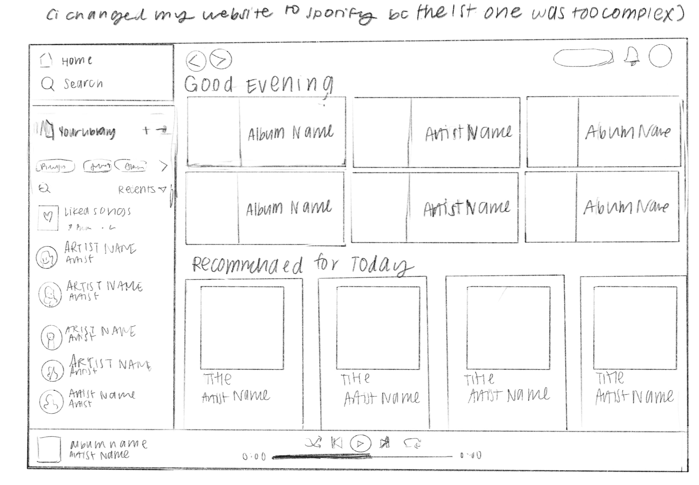
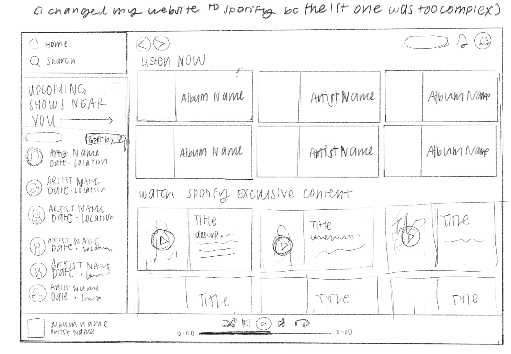

-
Using the favorite website you chose in homework 1, create a wireframe for one page of it using pen/paper, PowerPoint, or any your tool of choice. (use the 'img' tag!) Make sure to let us know what the name of your website is (Use the 'p' tag!)

-
Try to improve the website you've chosen, and create a redesigned wireframe of one page for the same website using the principles of visual hierarchy that you learned from the article.

-
What is the goal of the website? Who is it intended for? How does the design accomplish this? Write 2-3 sentences answering these questions. (Use the 'p' tag again!)
The goal of this website is to allow users to stream music or audio whenever and wherever they are. It is intended for almost all demographics as it includes a wide variety of music genres. The design communicates this clearly as you can see the names of musical artists or podcast hosts, as well as the visual for each album or piece next to it.
-
Write 2-3 sentences about what problems your redesign addressed, and how it solved them.
I feel like Spotify has pretty strong UI already, so my redesigns were more so suggestions of what they could add rather than problems they could fix. I feel like overall, their design is a bit cluttered so it might be best to simplify it and make it less overwhelming for the user. In my edits, I suggested that they implement their Live Events Feature on the sidebar, rather than repeating what the user recently played. I also suggested adding a visuals component, since a lot of video media is hard to find on Spotify, whether it's visualizers, small music videos, or video podcasts.
NOTE: Make sure to include the wireframe images in the website and don't just put it in your assets folder!
Your wireframes should look something like this: